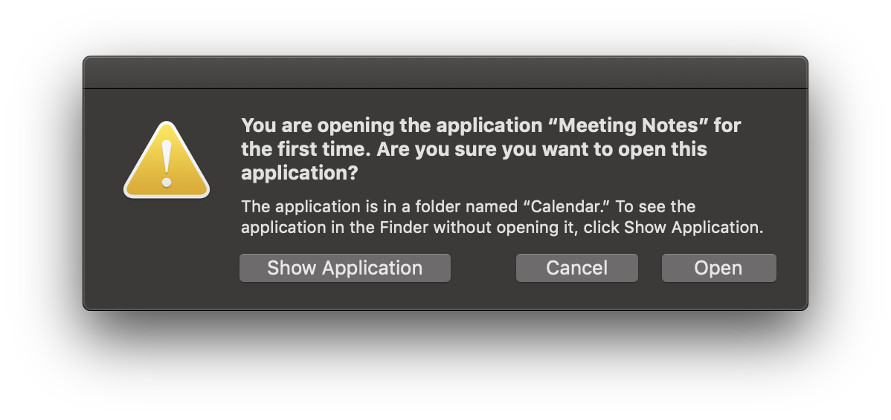
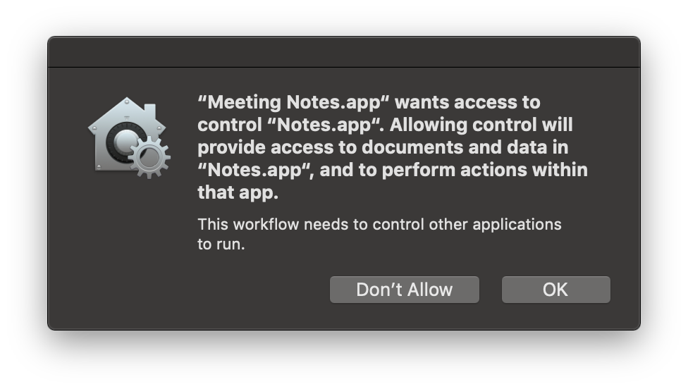
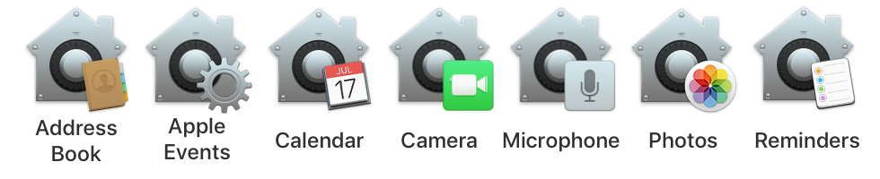
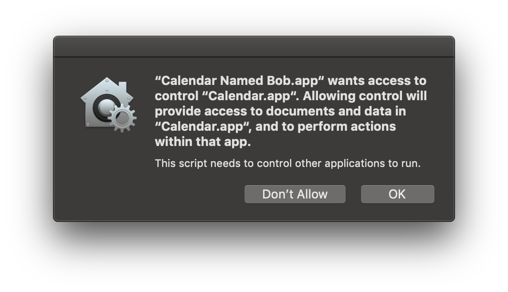
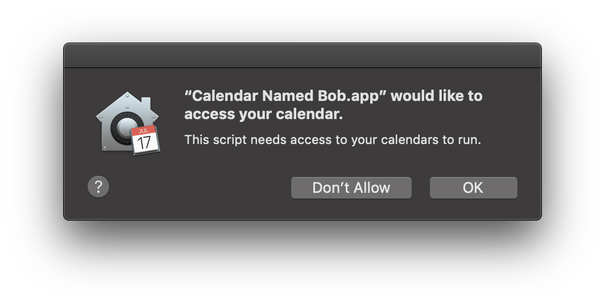
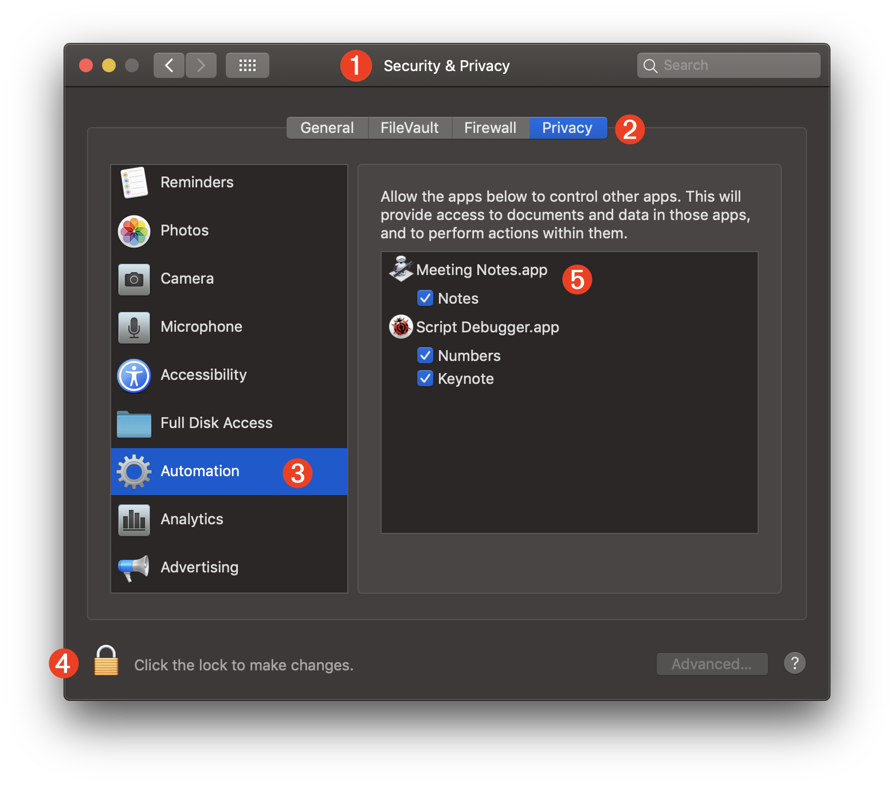
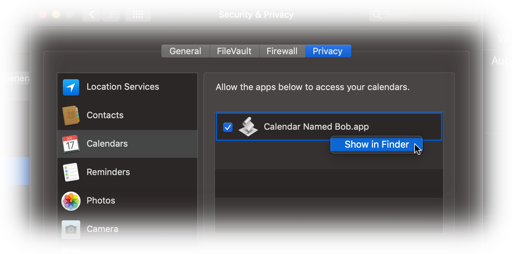

TAP TO HIDE SIDEBAR


Automation Security
The protection of user data is an important focus of macOS. With each successive release, procedures and features are implemented in order to better secure your information and files on the computer. macOS Mojave (v10.14) introduces new controls for Automation Security that enable the use of automation tools, apps, workflows, and scripts, but with explicit user approval.
In many respects, this is a departure from existing norms where automations are generally allowed to run without recognition. The new procedures do necessitate more effort in the setup of automation tools, but once implemented, should not require further user-interaction.
1st-Launch Alerts
A standard system alert appears whenever applications are launched for the first time. This practice may effect Automator applets created using the Application, Image Capture, Dictation Commands, or Calendar templates.

Once approved, the applications will launch without notification in the future.
Apps Controlling Apps or Accessing Data
As part of the enhanced security features of macOS, automation applications and scripts attempting to either control applications (via Apple Events), or access user data such as contacts or photos, will require an initial user approval upon their first attempt.

Access-approval by users is required for automation access to most user data including, the photo library, address book, calendar, reminders, and use of the computer’s microphone and camera. As stated previously, once access has been granted for an automation tool, no further prompting should occur when the automation tool is used for the same purpose.
The icon displayed in the system approval dialogs will indicate which data repository or hardware element requires your consent to be accessed.

NOTE: the same script or applet may trigger more than one security confirmation dialog, like this script application that is attempting to create a new calendar named “Bob”:


IMPORTANT: If an approval dialog in not approved (“Don’t Allow” is pressed), the requesting application will be added unchecked to the access list. YOU WILL NOT RECEIVE ANOTHER APPROVAL DIALOG REGARDING THE REQUESTING APPLICATION.
To enable scripting access for the application, unlock the preferences pane with your administrative password, and check the unchecked application in the access list.
Automation Security Preference Pane
Current access controls are listed in the Privacy tab of the Security & Privacy system preference pane in the System Preferences application.

1 The Security & Privacy preference pane in the System Preferences application.
2 The Privacy tab of the Security & Privacy preference pane.
3 The Automation (Apple Events) category of the privacy database.
4 The editing of the privacy database access list requires the use of an administrative user of the computer.
5 A list of the current tools and applications that require or have been granted access to the privacy database. Items cannot be removed from this list but you may enable or diable their access to individual privacy components by selecting or deselecting their checkboxes.
NOTE: To reveal an item’s location on the desktop, control-click the item to summon the “Show in Finder” menu:

Resetting the Privacy Database
ADVANCED USER TIP: should you wish to clear the current settings of the privacy database for a category, such as for the Automation (Apple Events) category, you can enter and run any of the following commands in the Terminal application. NOTE: these commands cannot be undone.
The tccutil command manages the macOS privacy database, which stores decisions the user has made about which applications may access personal data.
| Reset the Privacy Database | ||
| 01 | tccutil reset AddressBook | |
| 02 | tccutil reset Calendar | |
| 03 | tccutil reset Reminders | |
| 04 | tccutil reset Photos | |
| 05 | tccutil reset Camera | |
| 06 | tccutil reset AppleEvents | |
| 07 | tccutil reset Microphone | |
| 08 | tccutil reset Accessibility | |
This webpage is in the process of being developed. Any content may change and may not be accurate or complete at this time.
DISCLAIMER